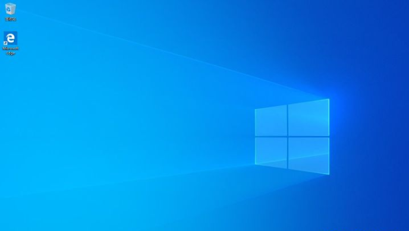

小白教程：使用微软官方工具干净安装Windows 10
前言
之所以写这么一篇教程，是因为很多人使用电脑过程中的问题是因为软件问题导致。所以DIY圈有一句话：重启能解决90%的问题，
重装能解决99%的问题。
网上重装Windows的教程很多，尤其是各种用PE工具安装，一键安装之类的，虽然方便。但很可能PE工具、
第三方重新封装的系统本身会带来其它的问题——可能别人碰不到或者无所谓，但到了自己这边就是有问题，使用微软官方提供的工具和镜像是最保险的。
准备工作：
- 一台已经装有Windows而且可以正常上网的电脑。
- 一个8G的空白U盘。如果U盘上有数据的话，请先做好备份工作！请先做好备份工作 ！请先做好备份工作！
- 了解清楚需要安装Windows的电脑如何从U盘启动，品牌机的去官网找资料或者找售后问，DIY的看主板说明书或者去主板厂商官网找资料。如果真的找不到，而且电脑比较新又预装了Windows 8以上版本的，可以参考文后附五。
- 如果要安装Windows 10的电脑上已经安装了Windows 10并且激活的，查看Windows版本并记下。步骤见文后附一。
- 如果不是新电脑，原来装有Windows，并且有多个硬盘/分区的，查看好要把Windows装到哪个硬盘上的哪个分区。步骤见文后附二。
第一步：制作USB安装盘
电脑插上U盘，如果插有其它U盘建议先拔下，以免后面误操作。如果U盘上有其它数据，先进行备份！先进行备份！先进行备份！
浏览器打开微软官网链接：下载链接
点击“立即下载工具”，下载完毕后，在下载文件夹中找到下载好的工具，双击打开：
刚打开界面显示正在准备工作，耐心等待几分钟，会出现许可界面，点接受：
选择“创建安装介质”，点“下一步”

这个界面默认就可以，直接点“下一步”。有特殊需要的自行更改，这里不赘述了。

选择“U盘”，点“下一步”。
如果有多个U盘的话，先拔下其它的。点“下一步”。
这个时候会从微软网站下载最新版本的Windows 10，根据网速的不同可能需要等一段比较长的时间（网速慢的可能需要几个小时）。
然后程序会创建安装盘，根据U盘写入速度的不同也会需要不同的时间，一些写入慢的U盘会需要二十多分钟甚至更长。
等到出现这个界面，U盘就好了。点击完成，然后可以拔下U盘了。
从U盘启动
把U盘插到需要安装Windows的电脑上，从U盘启动。具体步骤参考官方资料或者主板说明书，符合条件的可以参考文后附五
安装步骤
第一个安装界面，点“下一步
点“现在安装”
如果有安装序列号，现在可以直接输入。如果没有，点击“我没有产品密钥”。电脑是品牌机出厂预装Windows 10，
或者之前安装过Windows 10并且激活过的（KMS，也就是企业批量授权方式除外，不知道什么是KMS的直接忽略括号内内容），
安装完毕后会自动激活。都不是的话，如何激活Windows 10并不在本教程范围内——买正版序列号很简单方便，非正版使用这里就不提了，我不想收律师函。
如果上面输了序列号，安装程序会自动根据序列号选择版本，不会看到这个界面。
如果前面没有输序列号的，请选择计划购买的版本或者原来激活过的Windows版本。
如果不知道原来的Windows版本，而且因为系统崩溃已经进不去了，无脑选择家庭版。
勾上“我接受许可条款”，点“下一步”。
本教程是“干净安装”Windows，选“自定义”，升级安装不在本教程范围内。

选择把Windows安装在哪一个硬盘的哪一个分区上。这里稍微说详细一点：
- 如果是重新安装Windows 10，装回到原来Windows的所在磁盘、分区就可以。数分区序号的时候，看到类型是“MSR（保留）”的分区跳过不数。在文后附二中可以看到我这台电脑的Windows安装在第二个硬盘（附二界面显示磁盘 X，这里的界面显示“驱动器 X”，都是从0开始数）的第三个分区，所以这里选择驱动器1的分区4。
- 如果是更换了硬盘或者DIY的新电脑，硬盘上没有分区。这个时候有两个选择：
(1) 选择要安装Windows的硬盘，直接点击“下一步”，会使用整个硬盘作为C盘。我个人推荐这种方案。
(2) 如果习惯了用D盘放数据，点击“新建”，然后输入C盘大小。具体步骤见文后附三。 - 如果对原来的硬盘分区方案不满意，或者新买的电脑是预装了Linux不想要的话，这个时候可以重新分区，然后按照2的情况重新安装。重新分区步骤见文后附四，需要保留Linux做双启动的情况不在本教程范围内。
然后进入自动安装过程，等待电脑操作就可以。USB3的U盘+固态硬盘的话大概要等几分钟，如果是机械硬盘，或者USB2的U盘可能要等更长的时间。
这一步完成后会显示自动重启界面，可以等10秒或者直接点“立即重启”
第一次启动Windows
设置区域，默认中国不动。在国外使用的自己选择合适的地区。设置输入法，默认拼音，习惯五笔的可以改成五笔。
添加第二种输入法，跳过即可。
然后可能需要设置网络。一般来说，如果是有线网络，并且有路由器的会自动设置直接跳过，但使用无线网络的需要选择无线网络并输入密码。 某些网卡比较特殊的需要进入Windows后手动安装驱动程序。我的这台电脑是台式机没有无线网卡，Windows自动配置好网络了，这里无法截图。
输入微软账号、密码登录（推荐，可以同步不同电脑上的很多习惯设置），没有的点下面的“创建账户”注册。注册过程这里就不详述了。
下面几个界面都是让用户在方便性和隐私安全之间选择，请根据个人习惯以及对隐私重视程度进行设置。然后等待Windows 10进行初始化工作。
再稍等几分钟就装好了。

到这window10系统就安装成功啦~是不是很简单呢！你也来试试吧！